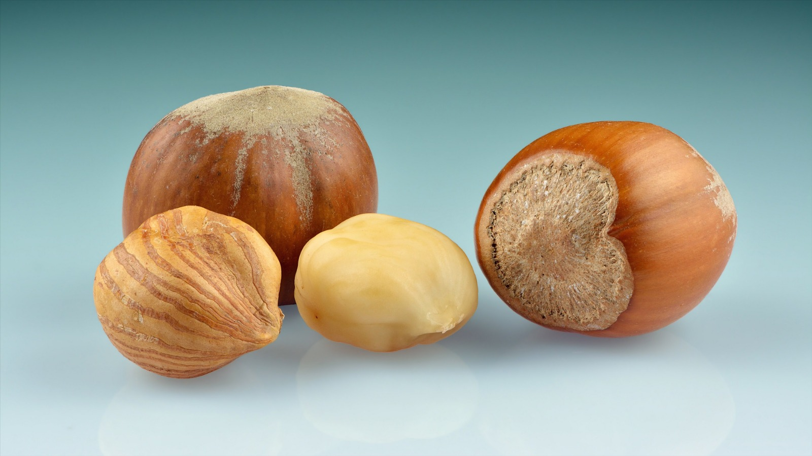

Le nocciole erano un alimento fondamentale per le diete antiche, ricche di grassi buoni e proteine. La coltivazione della nocciola era così importante per Nola da rappresentare un vero e proprio tratto identitario della città. Sebbene il nome derivi dalla città di Abella (che faceva parte della federazione osca di Nola e Abella prima della conquista romana), Nola era il principale centro di mercato di questo frutto che esportava in tutto il Mediterraneo. Il terreno Nolano era perfetto per le nocciole grazie al clima, infatti, l’umidità della pianura creava un ambiente ideale per la loro crescita. La nocciola, a differenza dell’uva, si conservava per lunghissimi periodi senza rovinarsi ed era quindi perfetta per il commercio a lunga distanza. Questo frutto veniva spesso utilizzato nei riti nuziali come augurio di abbondanza e fecondità, inoltre si credeva avesse proprietà curative per la tosse come riportato successivamente da autori come Plinio il Vecchio nella sua opera “Naturalis Historia”. Ancora oggi con le nocciole nolane si lavora un ottimo torrone che si gusta durante la festa di San Felice vescovo, patrono della città, il 15 novembre di ogni anno. E’ antica tradizione che in questa data gli innamorati regalino alle loro amate il torrone, detto tutero, simbolo di fertilità, e un ombrello in segno di protezione e come accessorio utile durante la stagione delle piogge. In questo stesso periodo si tiene la tradizionale fiera di San Felice in piazza Duomo con eventi, degustazioni di prodotti tipici del territorio e manifestazioni culturali.

nocciole
Foto di Ivar Ledius (2021) - Tratta da Wikipedia